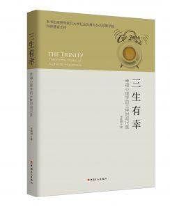

购买 ▶孔网 ▶天猫 ▶京东 ▶当当 ▶HK ▶臺灣 ▶USA
借阅 ▶复旦 ▶北大 ▶北师大 ▶全国
试读 ▶豆瓣 ▶TEDx
侯傑泰教授推荐序
十年前，晓煦曾邀请我为北京大学深圳研究生院的硕士学生作学术讲座。讲座结尾，我重申教育学研究选题的三个标准：1. 结论对于多数同行未知；2. 研究过程可实施；3. 有社会效益应用价值。晓煦老师在现场提出商榷意见：第3条未必成立，如果一个研究结果能破解思考者的悬念，虽然它未必有可评估的应用价值，仍然不影响其学术意义。这一商榷意见引发了现场学生热烈的讨论。晓煦的《三生有幸》社会效益应用价值可待时间检验，但已为许多思考者破解悬念。
《三生有幸》2.1节写到：「体验不是知识，传播体验的方式是让其发生」。阅读《三生有幸》的体验同样无法在序言文字里剧透。不过，如何阅读《三生有幸》或是可剧透的知识：1. 初读不妨跳过统计与数学内容；2. 但不要错过脚注中有趣的材料和讨论；3. 将这本书（像9.3节建议的那样）想像为作者留给后世读者的严肃文字。
七年前，晓煦从香港中文大学教育学院博士毕业。五年前，他回教育学院参加博士校友年度学术会议，作了题为《移动应用分析的积极心理学视角》的报告，给会场师友留下深刻印象。很高兴看到他在复旦大学的教学投入赢得认可，《幸福心理学》课程被学生选入《复旦蹭课指南》。晓煦的博士论文研究方向是教育与心理多元统计模型，他在心理统计专业课程有着长足的教研积累，希望看到他在这方面类似份量的代表作早日发表。
香港中文大学卓敏讲座教授 侯傑泰
2017年12月
阳志平先生推荐序
这是一本奇书，作者极有创意地将心灵哲学大师丹尼特的多重草稿模型与积极心理学创始人塞利格曼的幸福生活模型整合在一起，漂亮地回答了「幸福是什么」。正是人类受制于认知加工局限，心智、自我、认知、意识等等会在不同时间尺度上分层涌现，同理可证，幸福也会遵从同样规律。因此，作者将幸福整理为秒时间尺度上生发的愉悦、分钟小时时间尺度上生发的专注、超越时间尺度上生发的意义。一旦将幸福置入时间尺度考量，那么，三种幸福从此凸显，不同时间尺度的幸福之间的冲突、整合成就了三生有幸的人类，一些以往百思不得其解的人生谜题从此豁然开朗。更有趣的是，全书处处体现了作者试图教会读者如何像一位真正的心理学家一样思考与生活：从本质主义到操作主义的提问习惯；从单变量到多维分层的思维习惯。
安人心智集团董事长 阳志平
2017年12月
酒泉岁月涓涓尽 不尽长江滚滚来 [1]
——写在连夜读完《三生有幸》样稿的随笔
中国人向来有人生如梦的说法，黄粱美梦，转眼成空，如此短促一生，不由催人反思，人生意义何在？从古至今，哲人学者给出了不同的答案。一条路径是本质主义，不断追问：人生的「真正」意义是什么？「真正」的幸福是什么？如何寻找「真实的」自我？在本质主义者看来，世间种种谜题，一定存在一个无偏答案，并且这个答案可以自然地投射到所有星球、所有世界、所有文化、所有族群。梦醒梦灭，朝露昙花，儒家是朝闻道，夕死可矣；佛教是一朝顿悟，昨日成空，立地成佛。
但自从现代科学范式诞生后，尤其是认知科学开始入侵传统心智领域，我们发现，「人类存储、回忆历史的能力有限，对服务于当前信念、欲望的重构记忆敏感；人类分析能力有限，对加诸经验之上的框架敏感；人类固守成见，对支持先入之见的证据不如对反对先入之见的证据挑剔；人类既歪曲观察又歪曲信念，以提高两者的一致度；人类偏爱简单的因果关系，认为原因必定在结果附近，大果必定有大因；与复杂的分析相比，人类更喜欢涉及有限信息和简单计算的启发式」。
既怯弱又勇敢；既固守成见又推崇创新；既渺小又伟大！这才是活生生的人类。因此，在求解各类心智谜题时，譬如幸福、意识，出现了「操作主义」与「多维分层」的转向。我们不再假设，凭借人类这颗大脑能够很好地理解人类大脑。既然人类受制于认知局限，我们难以抓住自己头发，将自己从地面上举起来。但是，我们可以轻松地动手动脚去操作自己的身体的某个部件而非整体；我们也可以借助工具将自己从地面上举起来。
于是，意义感取代意义，幸福感区分幸福。意义感、幸福感成为可以借助科学家手中的测量工具进行「操作性定义」的变量。对于变量一层一层地剖离与观察，我们终究获得了更多不同于常识的「反常识」。比如，无论梦中世界还是真实人生，都会遵循作者在书中总结的传播律、参照律、峰终律、自珍律的人生体验四定律。
如果说从「本质主义」到「操作主义」是近代科学范式诞生后，带来的第一次认知革命。多维分层则是进化论、相对论、量子物理、复杂性、网络科学，这些思潮交错在一起带来的第二次认知革命——从牛顿到爱因斯坦。既然人难以举起自己，低层级的心智为何会涌现出高层级的意识？心灵哲学大师丹尼特的多重草稿模型告诉我们，意识本质上是一个文化的举重机。一级一级、一层一层，虚拟机安装在另一个虚拟机之上，最终涌现人类复杂而迷人的心智。
如果简单直接粗暴地来理解，我们可以参照丹尼特在《心灵种种》中提出的心智之塔模型，将那复杂而多变的虚拟机嵌套关系总结为四种心智：达尔文心智；斯金纳心智；波普尔心智；格列高利心智。达尔文心智受制于基因本能；斯金纳心智受制于操作条件反射；波普尔心智开始在个体层面的虚拟机中进行思想实验测试。到了第四个层级，人类则摆脱了生物个体的局限，人与人借助社会脑链接在一起，开始有了文化。这是第一次，人类摆脱肉身束缚，在进化意义上获得了「超越」——千年前的故事还在传诵；千年前的美德还在传承。
天地呵，那万物逆旅；光阴呵，那百代过客。人生如梦，是一个极佳的思想实验。短短百年，看似漫长，突然一梦，时间尺度发生了大变化，亲历黄粱一梦者不得不再次建构人生意义，重新讲述一个关于自我的故事：我是谁？我来自哪？我要去往哪？
既然人类受制于认知加工局限，心智、自我、认知、意识等等会在不同时间尺度上分层涌现，同理可证，幸福也会遵从同样规律。因此，作者将幸福整理为秒时间尺度上生发的愉悦、分钟小时时间尺度上生发的专注、超越时间尺度上生发的意义。一旦将幸福置入时间尺度考量，那么，三种幸福从此凸显，不同时间尺度的幸福之间的冲突、整合成就了三生有幸的人类，一些以往百思不得其解的人生谜题从此豁然开朗。
落花流水，时光散漫。人生呵，可以像李白一样秉烛夜游、任侠放歌，将那辉煌璀璨浓缩在春日一夜；也可以像沈复一样，慢慢地穷困潦倒一生，慢慢地与芸娘在月光下对酌，在池塘前微醺而饭，那何尝不也是一种幸福？
浮生若梦，为欢几何？恰在那分分秒秒、滴滴答答。
安人心智集团董事长 阳志平
2017-12-06
- 李晓煦注：非常感谢阳志平先生赐推荐序和读后随笔。本文原题「浮生若梦」，现题为书作者征求随笔作者意见代拟。「酒泉岁月涓涓尽、枫树生涯叶叶飘」引自《鲁拜集》第8首黄克孙教授译本（参见4.4节）。E. Fitzgerald英译为“The Wine of Life keeps oozing drop by drop / The Leaves of Life keep falling one by one”。作者奧瑪珈音是北宋同时代波斯学者，原诗或衍译自杜诗「无边落木萧萧下、不尽长江滚滚来」。
图 1.1 传球计数 [youku] [youtube]
- Miller, G. A. (2003). The cognitive revolution: a historical perspective, TRENDS in Cognitive Sciences, 7(3), 141-144. [pdf]
- Noam Chomsky. 本书西文人名中译以谷歌精确检索条目数十万为限，达到者在正文中采用中译（文献索引不作中译）；未达到者，保留西文原名不作翻译，以免人名中译给读者造成不必要的困扰。
- Cowan, N. (2001). The magical number 4 in short-term memory: A reconsideration of mental storage capacity, Behavioral and Brain Sciences, 24(1), 87-114. [doi]
- Simon, H. (1969). The Sciences of the Artificial. 中译《人工科学——复杂性面面观》。引文见中译本 (p. 49-50) [douban]
- Pöppel, E. (1988). Mindworks: Time and Conscious Experience. 中译《意识的时间限度》 [douban]
- 阳志平. (2015). 理性：重新定义人类认知能力 ——《超越智商》推荐序 . [wayback]
- Simons, D. & Chabris, C. (1999). Sustained inattentional blindness for dynamic events. Perception, 28(9), 1059-1074. [pdf]
- Seligman, M. (2002), The Authentic Happiness. 其中，第7章回忆了1998年的夏威夷大岛之旅；第2章介绍了从四十年代到2002年，14种精神障碍有了对照组标准的治疗方案，其中两种可治愈 [douban]
- Thomsen, M. (2004). The pursuit of happiness . [pdf]
- Seligman, M. (2004). The new era of positive psychology, TED Conference . [ted]
- 彭凯平. (2014). 积极心理学到底研究些什么问题 . 原作者微信公众号2014-12-17推送 [html]
- Maslow, A. (1954). Motivation and Personality. [douban]
The science of psychology has been far more successful on the negative than on the positive side; it has revealed to us much about man’s shortcomings, his illnesses, his sins, but little about his potentialities, his virtues, his achievable aspirations, or his full psychological height. It is as if psychology had voluntarily restricted itself to only half its rightful jurisdiction, and that the darker, meaner half. (p. 354)”
- TED是“Technology, Entertainment, Design”的缩写，是著名的非营利性传媒组织，运营同名的系列会议。[ted]
- Seligman, M. (2011), Flourish, Chap 1. [douban]
- 参见笔者对 Relator 与 Woo 这两个优势人格术语的中译辨析 . [zhihu]
- Maslow, A. (1969). The farther reaches of human nature, Journal of Transpersonal Psychology, 1(1), 1-9. [apa]
- Diener, E., Emmons, R. A., Larsen, R. J., & Griffin, S. (1985). The satisfaction with life scale, Journal of Personality Assessment, 49(1), 71–75. [author]
- Larsen, R. J., & Eid, M. (2008). Ed Diener and the science of subjective well-being. In M. Eid & R. J. Larsen (Eds.), The science of subjective well-being (p. 347–375). New-York: The Guilford Press. [pdf]
- Diener, E., Heintzelman, S. J., Kushlev, K., Tay, L., Wirtz, D., Lutes, L. D., & Oishi, S. (2016). Findings All Psychologists Should Know From the New Science on Subjective Well-Being. Canadian Psychology / Psychologie canadienne, 58(2), 87-104. [author]
- Peterson, C., Park, N., & Seligman, M. (2005). Orientations to happiness and life satisfaction: The full life versus the empty life. Journal of Happiness Studies, 6(1), 25-41. [author]
- Stanovich, K. (1986). How to Think Straight About Psychology. Chap 3. [douban]
- 本小节首发于笔者教学专栏 . [zhihu]
- 原文：I shall not try to settle which is chicken and which is egg: whether we are able to understand the world because it is hierarchic or whether it appears hierarchic because those aspects of it which are not elude our understanding and observation.
- 对于多变量的一般情形，高相关与主成份分析的单维度在理论上并没有蕴含关系，虽然在研究实践中很少遇到二者不一致的例子。详见 Green, S. B., Lissitz, R. W., & Mulaik, S. A. (1977). Limitations of coefficient alpha as an index of test unidimensionality. Educational and Psychological Measurement, 37(4), 827-838. [apa]
- Marsh, H. (1990). Influences of internal and external frames of reference on the formation of math and English self-concepts. Journal of Educational Psychology, 82(1), 107-116. [author]
- “治愈 (Curable)”与“治疗 (Treatable)”在临床心理文献中有明确的区别。参读：抑郁症能完全治愈吗？有哪些有效方法？ - 回答作者: 周不润 . [zhihu]
- VIA最初是Values In Action的缩写，企业的正式名称现为VIA，原先的全称不再使用。 [wikipedia]
- APA, (2003). People, 34(3), 87. [apa]
- 原文 I suppose it is tempting, if the only tool you have is a hammer, to treat everything as if it were a nail. [wikipedia]
图 2.1 传球计数 [bilibili] [youtube]
图 2.2 演示课件 (p. 5) [ppt]
图 2.3 Abrash演讲 [leiphone]
图 2.6 Kahneman演讲 [ted]
图 2.8 Gilbert演讲 [ted]
- 友情提示！为免剧透，请在完成视频实验之后再阅读本条注解的引用文章：林二汶 (2011). 错觉的破坏力与生长力. 21世纪商业评论, 4, 118-120. [douban]
- 本书中的“知识”一词并非严谨的哲学术语，其外延小于知识论哲学中的“知识”，只包含可以言传的陈述性知识，不包含无法言传的过程性知识。本书中的“体验”一词虽然在心理学与哲学文献广泛出现，但在认知心理学中仍然缺乏成熟的操作化定义，与之有关的概念包括“意识”、“注意”、“情绪”、“工作记忆”等等，其中“意识”与“注意”这两个概念本身在认知心理学文献中已存在广泛的分歧。关于“意识”可参读本书5.3节；关于“注意”的争论可参读 Anderson, B. (2011). There is no Such Thing as Attention. Frontiers in Psychology, 2, 246. [fpsyg]
- 参读王阳明《传习录》之“知行合一”、“事上磨练”思想。原文：“知是行之始，行是知之成。若会得时，只说一个知，已自有行在。只说一个行，已自有知在”，又比如“人须在事上磨”。笔者曾斟酌是否将“传播律”取名为“知行律”，考虑到“知（道途径）行（走完成）”之后还有体验的发生，“知行律”容易误读为“行而后知”，不便于强调“知道知识”与“发生体验”的区分。中国传统思想注重“合一”，操作主义取向强调“区分”。 [wikipedia]
- Matt Davis 维护着一个收集各种语言版本范例的网页，长期征求线索，最终找到并发布了原始文献的摘要 Rawlinson, G. E. (1976). The significance of letter position in word recognition. Unpublished PhD Thesis, Psychology Department, University of Nottingham, Nottingham UK. [cam.ac]
- Animism, 又译为“万物有灵论”。不同于“泛神论 (Pantheism)”。
- 比如台湾花莲市慈济大学，开设有社会学科通识课程《臨終關懷及悲傷輔導 (Hospice Care and Grief Counseling)》。参见：慈济大学(2009). 生命教育學程辦法. [tcu]
- 濒死经历触发人生意义体验的这段内容的较早版本摘自笔者第一讲知乎Live 的问答环节 . [zhihu]
- Luc Ferry. (2008). Apprendre à vivre : Je vais te raconter l'histoire de la philosophie. 中译：人生难得是心安——另类西方哲学简史. [douban]
- Moore, B. N. (2014). Critical Thinking. 见Chap 1.1.1，留意Chap 1.1.2提到，在学术化的行文中，“关于事实的观点”应当属于“客观断言”而非“主观断言”。小学阶段批判性思维课程中的“事实”与“观点”这两个词的用法没有这么学术化，大体对应于这本教材中的“客观断言”与“主观断言” [douban]
- 小花生网. (2016). 为什么国外孩子从小学习怎么区分Facts & Opinions? 因为这就是培养批判性思维的起点. [wechat]
- 原文：If you tell me that someone is in love, I understand your meaning and form a correct conception of the state he is in; but I would never mistake that conception for the turmoil of actually being in love! (Section 2: The origin of ideas). Hume, D. (1748). An Enquiry Concerning Human Understanding. [google]
- Abrash, M. (2015). Facebook 的愿景以及虚拟现实的未来 . [wechat]
- 比“红蓝药丸”更有名的例子是“白金—蓝黑变色裙”，都可解释为环境光的参照改变了色相（Hue）体验。比色相参照体验更容易解释的是明度（Brightness）体验，可参读 Adelson, E. H. (2000). Lightness Perception and Lightness Illusions. In M. Gazzaniga (Ed.), The New Cognitive Neurosciences (2nd ed. pp. 339-351). Cambridge, MA: MIT Press. [mit]
- Ariely, D. (2008). Are We in Control of Our Own Decision? 3’26’’色彩实验；17’18’’ 颜值实验 [ted]
- 陈毓文. (2006). 一般在学青少年自残行为之相关环境因素初探. 中华心理卫生学刊, 19(2), 95-124. [doi]
- Klonsky, E. D. & Muehlenkamp, J. J. (2007). Self-injury: A Research Review for the Practitioner. Journal of Clinical Psychology: In Session, 63(11), 1045-1056. [wayback]
- Olds, J., & Milner, P. (1954). Positive reinforcement produced by electrical stimulation of septal area and other regions of rat brain. Journal of comparative and physiological psychology, 47(6), 419. [author]
- Berridge, K. C., Robinson, T. E., & Aldridge, J. W. (2009). Dissecting components of reward: “liking”, “wanting”, and learning. Current Opinion in Pharmacology, 9(1), 65–73. [author]
- Brickman, P., Coates, D., & Janoff-Bulman, R. (1978). Lottery winners and accident victims: Is happiness relative? Journal of Personality and Social Psychology, 36, 917-927. 几乎所有积极心理学教材都引用了该文献的“恢复到接近事件前幸福感水平”研究结论，虽然这个结论只有小样本的点估计证据，不具有统计显著性。值得一提的是，该文献发现对于同样的日常事件五点量表幸福感评价，乐透大奖获得者的评价均值3.33显著（p = .011）低于普通人的3.82。《真实的幸福》第四章写到，“重要事件（如失业或晋升等）在三个月之后就会失去它对快乐程度的影响力”。 [pdf]
- Stevenson, B., & Wolfers, J. (2008). Economic Growth and Subjective Well-Being: Reassessing the Easterlin Paradox. Brookings Papers on Economic Activity, 39(1), 1-102. [nber]
- 数据来自 happyplanetindex.org 图中右侧从西班牙到挪威的那一段预测线也非常陡峭。 [happyplanetindex]
- 有量纲的物理量取对数后的意义？——李晓煦的回答. [zhihu]
- Kantowitz, B. H., Roediger, H. L., & Elmes, D. G. (2010). 实验心理学，郭秀艳等译. 上海：华东师范大学出版社. [douban]
- The New York Times. (2002). A CONVERSATION WITH Daniel Kahneman; On Profit, Loss and the Mysteries of the Mind . [nytimes]
- The New York Times. (2010). Think the Answer’s Clear? Look Again. [nytimes]
- 接受肠镜检查是一种怎么样的体验? [zhihu]
- Redelmeier, D. A. & Kahneman, D. (1996). Patients’ Memories of Painful Medical Treatments: Real-time and Retrospective Evaluations of Two Minimally Invasive Procedures, Pain, 66, 3-8. [author]
- Kahneman团队的系列研究强调结尾的权重，峰值的权重只在结论中起到辅助的作用。在本书引证的部分文献中，峰值虽然名义上被赋予等于结尾的权重，但二者的权重比例只是模型的假设前提而非实证结论。
- Ariely, D. (2009). On our buggy moral code. [ted]
- 生理刺激还是参照体验成为叙事主导，因人而异，因事而异。比如内急如厕的例子，多数人并非不记得如厕时的舒缓愉悦，但仍然会以内急作为叙事主导，提醒自己下次长途大巴之前节制饮水及时如厕。在长跑刚刚结束的时刻，或者长途高速服务区终于可以解手的时刻，即使正在体验舒缓的极度愉悦，也仍然记得短时间之前的生理痛苦，只是极度受限的注意力在那一刻集中在了舒缓体验。
- Kahneman, D., Frederickson, B. L., Schreiber, C. A., & Redelmeier, D. A. (1993). When More Pain Is Preferred to Less: Adding a Better End, Psychological Science, 4, 401-405. 原文采用正态统计量近似的检验方法，得到名义上显著但其实低估的p值。R代码：binom.test(22,32) 得到p=0.0501；R代码：prop.test(22,32,correct=F) 得到正态近似方法低估的p=0.0339。[apa]
- “常听到临床医生感慨，‘如果长了肿瘤，我肯定不做放疗’。其实我也有同感。”中国协和医科大学新药安全评价研究中心研究员王爱平说。摘自：中国科学报，专家解析放疗在癌症治疗中的作用. [sciencenet]
- Sunstein, C. R., & Thaler, R. (2016). The Two Friends Who Changed How We Think About How We Think, The New Yorker, 7. [newyorker]
- Diener, E., Wirtz, D., & Oishi, S. (2001). End Effects of Rated Life Quality: The James Dean Effect. Psychological Science, 12(2), 124-128. [doi]
- 王家卫 (1994).《东邪西毒》台词 . [wikipedia]
- 英文Experiencing Self。哲学文献通常将第一个词翻译为“经验”。港台的心理学文献也更多用“经验”。比如简体中文文本常见的“用户体验”一词，在港台即翻译为“使用者经验”。
- 博客“译者之言”：Endowment Effect. [blogspot]
- Kahneman, D., Knetsch, J. L., & Thaler, R. H. (1991). Anomalies: The Endowment Effect, Loss Aversion, and Status Quo Bias. The Journal of Economic Perspectives, 5(1), 193-206. [pdf]
- Kahneman, D., & Tversky, A. (1979). Prospect theory: An analysis of decision under risk. Econometrica, 47, 263-291. [pdf]
- Brehm, J. W. (1956). Post-decision changes in desirability of alternatives. Journal of Abnormal and Social Psychology, 52, 384–389. [apa]
- Morewedge, C. K., Shu, L. L., Gilbert, D. T., & Wilson, T. D. (2009). Bad riddance or good rubbish? Ownership and not loss aversion causes the endowment effect. Journal of Experimental Social Psychology, 45,947–951. [pdf]
- Ericson, K. M. M., & Fuster, A. (2014). The endowment effect. Annual Review of Economics, 6, 555–579. [doi]
- 如何看待将统计显著标准调整到 p < .005 的做法？这样是不是掉入了样本量的陷阱？ - 回答作者: 李晓煦 . [zhihu]
图 3.2 Pink演讲 [ted]
- Siemens, H. W. (1924). Die zwillingspathologie; ihre bedeutung, ihre methodik, ihre bisherigen ergebnisse. Berlin: Springer. 书名中译：孪生病理学——研究的意义、方法与进展 [worldcat]
- Bouchard, T., Lykken, D., McGue, M., Segal, N., & Tellegen,A. (1990). Sources of human psychological differences: The Minnesota study of twins reared apart. Science, 250, 223-229. [pdf]
- Lykken, D., & Tellegen, A. (1996). Happiness is a stochastic phenomenon. Psychological Science, 7, 186–189. [wayback]
- Lyubomirsky, S., Sheldon, K. M., & Schkade, D. (2005). Pursuit of happiness: The architecture of sustainable change. Review of General Psychology, 9, 111-131. [pdf]
- Nes, R. B., & Roysamb, E. (2015). The heritability of subjective wellbeing: Review and meta-analysis. In M. Pluess (Ed.), The genetics of psychological well-being: The role of heritability and genetics in positive psychology (pp. 75–96). 详见2中的Model 4. 本文作者认为主观幸福感可以提取为单维度的变量 (“The different SWB components are separable both theoretically and empirically, but are assumed to reflect one single underlying dimension, or higher-order construct”) ，印证1.3节相关的讨论。 [author]
- 这个大部分数理统计学生都知道而大部分社科研究者不熟悉的事实，可参考如下网页，笔者还在这个回答中推荐了相关的软件工具：元分析这一统计方法有何精妙之处？ [zhihu]
- http://match.ctglab.nl 是这个元分析的成果网站。Polderman T. J., Benyamin B., De Leeuw C. A., Sullivan P. F., Van Bochoven A., Visscher P. M., Posthuma D.(2015). Meta-analysis of the heritability of human traits based on fifty years of twin studies. Nature genetics, 47(7), 702-709. [match]
- Kaprio, J. (2003). Heritability of adult body height: A comparative study of twin cohorts in eight countries. Twin Research and Human Genetics, 6(5), 399-408. [pdf]
- Dickens, W. T., & Flynn, J. R. (2001). Heritability estimates versus large environmental effects: the IQ paradox resolved. Psychological review, 108(2), 346. [pdf]
- Diener, E., & Biswas-Diener, R. (2002). Will Money Increase Subjective Well-Being? Social Indicators Research, 57(2), 119-169. [author]
- 这一段内容可见于：在积极心理学中，个人的童年对其一生影响如何？ [zhihu]
- 如果读者对成年依恋风格研究感兴趣，荐读这两个综述网页：科普专栏主笔Hanason中文长篇综述 [wayback]；伊利诺伊大学心理系教授 Chris Fraley 英文教学网页[wayback]
- Picardi, A., Fagnani, C., Nistico, L., and Stazi, M.A. (2011). A twin study of attachment style in young adults. Journal of Personality, 79, 965–991. [author]
更具体的结论是：焦虑的方差=基因45%+共同环境0%+非共同环境55%；退缩的方差=基因36%+共同环境0%+非共同环境64%；焦虑与退缩协方差所对应的两个变量方差重叠部分=基因62%+共同环境0%+非共同环境38%。值得一提的是，幼年被试与成年被试得到结论正好相反，现有的研究认为共同环境对依恋风格的幼年变异有主要的贡献，基因没有贡献或者贡献比较小。
- 《宁静祷文》四十年代由著名神学家Reinhold Niebuhr首创。中译版本摘自《真实的幸福》译者洪兰教授的另一部译著《改变：生物精神医学与心理治疗如何有效协助自我成长》，有细微修改。关于“匿名戒酒会”还可参读知乎问题：美剧里，人们在戒酒互助会上分享自己的悲惨经历究竟有何效果？现实生活中真的在这样做吗？ [zhihu]
- Costa, P. T., & McCrae, R. R. (1992). Revised NEO Personality Inventory (NEO PI-R) and NEO Five-Factor Inventory professional manual. Odessa, FL: Psychological Assessment Resources. [author]
- Rath, T. (2007). StrengthsFinder 2.0. [douban]
- Facebook早期员工覃超在多次公开演讲中介绍了该公司对优势识别器的应用。比如下面这个视频7'00''位置 [youtube]
- 《真实的幸福》将“Signature Strengths”误译为“突出的 (Significant) 优势”。Signature是指象“签名”甚至“指纹”一样的个人专属优势。或宜译为“人格优势”。
- 有哪些外行看上去很高大上，但在内行眼里 low 得不行的东西？ - 回答作者: 王非 [zhihu]
- Bouchard, T., & McGue, M. (2003). Genetic and environmental influences on human psychological differences. Journal of Neurobiology, 54, 4–45. [author]
- Steel, P., Schmidt, J., & Shultz, J. (2008). Refining the relationship between personality and subjective well-being. Psychological Bulletin, 134, 138-161. 相关系数取表2报告的ρ估计值；β取表7报告值。 [pdf]
- Peterson, C. (2006). A primer in positive psychology. Oxford University Press. Table 4.1 [douban]
- 可参考笔者在“雪晴直播课”平台的讲座：反事实因果与回归佯谬 [wayback]；还可参读：为何历史上那些高智商的名人子孙往往都难以再创辉煌？ - 回答作者: 李晓煦 . [zhihu]
- 几何上的理解是：彼此同向的（中心化）向量相加，才可以按向量绝对长度计算各部分占加总的比例；彼此垂直的向量相加，只可以按向量的长度平方计算各部分占加总的比例。
- 在因变量标准化的时候，回归方程预测值的方差等于R2<1。把预测值标准化，意思是让预测值减去其分布均值，再除以其标准差，让最后得到的g方差为1，方便让下文中的一对回归方程中的回归系数等于标准化回归系数。
- 考虑到筛选的边界线上两个变量负相关——如果只筛选两门课的总分，边界线的相关系数为-1。所以，筛选之后的小群体相关系数甚至可能由正转负。
- 参读：歧视的根源是什么？-李晓煦的回答. [zhihu]
- Danner, D. D., Snowdon, D. A., & Friesen, W. V. (2001). Positive emotions in early life and longevity: findings from the nun study. Journal of personality and social psychology, 80(5), 804-813. [pdf]
- Emotion (情绪)与Affect(情感) 是略有侧重的不同术语，互换大体不影响普通读者解读。本书中，二词的选择主要遵从所引用文献。在测评细节上，情绪有两个维度：唤起强度(Activation)-正负效价(Valence)；情感主要采用主观幸福感工具测评，主要评价频率而非强度。细微差别可参考：Ekkekakis, P. (2013). The measurement of affect, mood, and emotion: A guide for health-behavioral research. Cambridge University Press. [amazon]
- Harker, L., & Keltner, D. (2001). Expressions of positive emotion in women's college yearbook pictures and their relationship to personality and life outcomes across adulthood. Journal of personality and social psychology, 80(1), 112. [author]
- Margraf, J., Meyer, A. H., & Lavallee, K. L. (2013). Well-being from the knife? Psychological effects of aesthetic surgery. Clinical psychological science, 1(3), 239-252. [author]
- Mednick, S. (1962). The associative basis of the creative process. Psychological review, 69(3), 220. [pdf]
- Worthen, B. R., & Clark, P. M. (1971). Toward an improved measure of remote associational ability. Journal of Educational Measurement, 8(2), 113-123. [author]
- Glucksberg, S. (1962). The influence of strength of drive on functional fixedness and perceptual recognition. Journal of experimental psychology, 63(1), 36. [apa]
图4.3 鸽子打乒乓球视频 [youtube] [搜狗视频搜索]
图4.4 两猫打铃视频 [twitter] [搜狗视频搜索]
- Kanizsa, G. (1976). Subjective contours. Scientific American, 234(4), 48-52. [apa]
- 推荐初学神经网络模型的读者参考 Smilkov, D. & Carter, S. Tinker With a Neural Network in Your Browser. [tensorflow]
- Kanizsa三角形作为一个神经网络模式识别问题，机器学习训练背景的学生可能认为它的解答算法是这个领域的圣杯，但是对识别的结果本身有极高的接受度，不会用错觉、幻觉这样的词汇去描述。反之，不了解机器学习的60年代认知主义心理学研究者，会认为这个现象本身很反常，对于符号系统的计算机，残缺的关键局部输入不应该感知一个完整的全局对象。
- Specter, M. (2014). Drool: Ivan Pavlov’s real quest. The New Yorker, 123-126. [newyorker]
- Pavlov, I. P. (1927). Conditioned reflexes, GV Anrep. London: Oxford University Press. [pdf]
- 操作条件作用的神经网络模式识别解释见于 Michael Shermer的TED演讲，较少见于主流的心理学教科书. [ted]
- Watanabe, H., & Mizunami, M. (2006). Classical conditioning of activities of salivary neurones in the cockroach. Journal of Experimental Biology, 209(4), 766-779. [author]
- 1926年，复旦大学心理学院建成标志性建筑子彬院，“《申报》称，大楼规模据世界第三位，仅次于苏俄巴甫洛夫心理学院和美国普林斯顿心理学院。” [wayback]
- "Professor Pavlov is busy. He is dying." [russiapedia]
- Catania, A. C., & Laties, V. G. (1999). Pavlov and Skinner: Two lives in science. Journal of the Experimental Analysis of Behavior, 72(3), 455-461. [author]
- Haggbloom, S. J., Warnick, R., Warnick, J. E., Jones, V. K., Yarbrough, G. L., Russell, T. M., ... & Monte, E. (2002). The 100 most eminent psychologists of the 20th century. Review of General Psychology, 6(2), 139. [author]
- Skinner, B. F. (1987). Whatever happened to psychology as the science of behavior?. American psychologist, 42(8), 780. [author]
- 来源视频可访问日文推特号 @b_ru_ru“ねこナビ編集部” . [twitter]
- 东华君@知乎：人类有三个大脑？ ——有趣的Triune Brain假说。作者指出，虽然在该学说仍然是很好的科普近似模型，但已不再获得主流神经科学界的支持 . [zhihu]
- Kisch, J., & Erber, J. (1999). Operant conditioning of antennal movements in the honey bee. Behavioural Brain Research, 99(1), 93-102. [author]
- Diamond, J. (2013). The world until yesterday: What can we learn from traditional societies? Penguin. [douban]
- Izard, C. E. (2009). Emotion theory and research: Highlights, unanswered questions, and emerging issues. Annual review of psychology, 60, 1-25. [author]
- 如何更好理解詹姆斯 兰格的情绪理论？ - 回答作者: 冯慎行 [zhihu]
- Wolpe, J. (1961). The systematic desensitization treatment of neuroses. The Journal of nervous and mental disease, 132(3), 189-203. [apa]
- Rescorla, R. A. (1973). Effect of US habituation following conditioning. Journal of comparative and physiological psychology, 82(1), 137-143. [apa]
- Harris, S. R., Kemmerling, R. L., & North, M. M. (2002). Brief virtual reality therapy for public speaking anxiety. Cyberpsychology & behavior, 5(6), 543-550. [apa]
- Skinner, B. F. (1992). " Superstition" in the pigeon. Journal of Experimental Psychology: General, 121(3), 273. Skinner的引文中译取自《改变心理学的40项研究》2010年中译本。 [pdf]
- Otto, T. (2009). What happened to cargo cults? Material religions in Melanesia and the West. Social Analysis, 53(1), 82-102. [author]
- (1960). The People of Paradise - A Journey through the South Seas 2: Cargo Cult. [youtube] 还可参考另一部较新的纪录片 [youtube]
- Bandura, A. (1962). Social learning through imitation (pp. 211-269). In M. R. Jones (Ed.), Nebraska Symposium on Motivation. Lincoln: University of Nebraska Press. [author]
- 这一小节曾发表于笔者知乎专栏 . [zhihu]
- 为什么知道自己陷入困境后难以寻求到解决方式？——李晓煦的回答. [zhihu]
- Wood, W., & Rünger, D. (2016). Psychology of habit. Annual Review of Psychology, 67. [author]
- Duhigg, C. (2012). The power of habit: Why we do what we do in life and business. Random House. 中译《习惯的力量》 [douban]
- 这个模型与斯金纳著名的Three Term Contingency模型有相似之处但不是一回事。斯金纳的三项模型的第一项“环境”作为背景调节了二、三项之间的强化是否有效，不存在条件反射；“习惯”三要素的第一项“环境”作为刺激直接触发了操作行为，可以是条件反射，不改变二、三项之间的强化效果。
- Ben-Shahar, T. (2009). Week 2: Rituals. In Even happier: A gratitude journal for daily joy and asting fulfillment. McGraw Hill Professional. [douban]
- Overmier, J. B., & Seligman, M. E. (1967). Effects of inescapable shock upon subsequent escape and avoidance responding. Journal of comparative and physiological psychology, 63(1), 28. [author]
- Seligman, M. E., & Maier, S. F. (1967). Failure to escape traumatic shock. Journal of experimental psychology, 74(1), 1. [pdf]
- Seligman, M. E. (1975). Helplessness: On depression, development, and death. WH Freeman/Times Books/Henry Holt & Co. [douban]
- “However, the part of the dimension that is detected or expected seems now to be the presence of control, not the absence of control.” Maier, S. F., & Seligman, M. E. (2016). Learned helplessness at fifty: Insights from neuroscience. Psychological review, 123(4), 349. [ncbi]
- Greenwood, B. N., & Fleshner, M. (2008). Exercise, learned helplessness, and the stress-resistant brain. Neuromolecular medicine, 10(2), 81-98. [author]
- 余光中《猛虎与蔷薇》，译Siegfried Sassoon名句“In me the tiger sniffs the rose”。参见知乎问题：“心有猛虎，细嗅蔷薇”到底想表达什么意思？[zhihu]
- Kahneman, D. (2011). Thinking, fast and slow. Macmillan.简体中译本题名为《思考：快与慢》。港台更早的中译是《快思慢想》 [douban]
- Evans, J. S. B., & Stanovich, K. E. (2013). Dual-process theories of higher cognition: Advancing the debate. Perspectives on psychological science, 8(3), 223-241. [author]
- Rotter, J. B. (1966). Generalized expectancies for internal versus external control of reinforcement. Psychological monographs: General and applied, 80(1), 1-28. [apa] 量表的中译版本可见于 Robinson, J. (1997). 性格与社会心理测量总览. (杨中芳 译). 台北市: 远流. [douban][pulipuli]
- Welton, G. L., Adkins, A. G., Ingle, S. L., & Dixon, W. A. (1996). God control: The fourth dimension. Journal of Psychology and Theology, 24(1), 13-25. [apa]
- 本段内容曾发表于笔者教学专栏：浮生若π 使命必达 . [zhihu]
- 严格地说，尚未在数学上证明，但几乎所有数学家都确信. [wikipedia]
- 奧瑪珈音, 黄克孙. (1989). 鲁拜集. 台北: 台北书林出版公司. [ruanyifeng]
- Seligman, M. E. (2011). Learned optimism: How to change your mind and your life. Vintage. [douban]
- Hiroto, D. S., & Seligman, M. E. (1975). Generality of learned helplessness in man. Journal of personality and social psychology, 31(2), 311. [apa]
- Peterson, C., Semmel, A., Von Baeyer, C., Abramson, L. Y., Metalsky, G. I., & Seligman, M. E. (1982). The attributional style questionnaire. Cognitive therapy and research, 6(3), 287-299. [author]
图 5.4 Raffaello D'Andrea四轴飞行器演示 [ted]
- Maslow, A. H. (1964). Religions, values, and peak experiences. London: Penguin Books Limited. [pdf]
- Privette, G. (1983). Peak experience, peak performance, and flow: A comparative analysis of positive human experiences. Journal of personality and social psychology, 45(6), 1361. [pdf]
- Schiller, F. (1902). Aesthetical and philosophical essays . PF Collier. [archive]
- Csikszentmihalyi, M. (1990). Flow: The psychology of optimal Experience. 中译者张定绮的译本在海峡两岸用了不同的书名：《快乐，从心开始》（天下文化：台北）、《当下的幸福》（中信出版社：北京）[douban]
- Csikszentmihalyi, M., & Csikszentmihalyi, I. S. (Eds.). (1992). Optimal experience: Psychological studies of flow in consciousness. Cambridge university press. [douban]
- Csikszentmihalyi, M. (1997). Finding flow: The psychology of engagement with everyday life. Basic Books. 原文：“The metaphor of ‘flow’ is one that many people have used to describe the sense of effortless action they feel in moments that stand out as the best in their lives. Athletes refer to it as ‘being in the zone,’ religious mystics as being in ‘ecstasy,’ artists and musicians as aesthetic rapture. Athletes, mystics, and artists do very different things when they reach flow, yet their descriptions of the experience are remarkably similar.” [douban]
- Csikszentmihalyi, M. (2004). Flow, the secret to happiness. [ted]
- 这是刘未鹏老师书评《不是书评 ：〈我是一只ＩＴ小小鸟〉》的第一句 . [mindhacks]
- Csikszentmihalyi, M. (1993). The Evolving Self: A Psychology for the Third Millennium. NY: HarperCollins. [douban]
- Csikszentmihalyi, M., & Larson, R. (2014). Validity and reliability of the experience-sampling method. In Flow and the foundations of positive psychology (pp. 35-54). Springer Netherlands. [doi]
- Martin, M. W. (2012). Happiness and the good life. OUP USA. [douban]
- Levine, M. (2011). The positive psychology of Buddhism and yoga: Paths to a mature happiness. Routledge. [douban]
- Jose, P. E., Lim, B. T., & Bryant, F. B. (2012). Does savoring increase happiness? A daily diary study. The Journal of Positive Psychology, 7(3), 176-187. [author]
- Bryant, F. B., & Veroff, J. (2007). Savoring: A new model of positive experience. Lawrence Erlbaum Associates Publishers. [amazon]
- Kabat-Zinn, J. (1982). An outpatient program in behavioral medicine for chronic pain patients based on the practice of mindfulness meditation: Theoretical considerations and preliminary results. General hospital psychiatry, 4(1), 33-47. [apa]
- 比如“八周的正念冥想即可对大脑活动产生显著积极的影响…海马区灰质密度增加，而这一区域在学习和记忆的发挥重要的作用”[zhihu]。参读《翻转电台》[#66]讨论其中的误读与误译。
- 此前两年，Hofstadter出版了影响深远的普利策奖名著《G. E. B. (Gödel, Escher, Bach: an Eternal Golden Braid)》。与前文所引Levine诗作一样，《G. E. B.》也是基于Escher绘画再创作的杰作。 [douban]
- 《心我论》中包括《我在哪里？》的三篇科幻小说由荷兰导演Piet Hoenderdos在1988年拍成“纪录片”《Victim of the Brain》，Dennett出演小说中的自己，Hofstadter和Marvin Minsky都在这部伪纪录片中出镜。 [imdb]
- Harman的“缸中之脑”是笛卡尔“恶魔感官”思想实验的现代版本，心灵哲学文献最常引用的是 Putnam的反驳论证。Harman, G. (1973). Thought. Princeton. NJ: Princeton University. [amazon] Putnam, H. (1981). Brains in a Vat. In Reason, Truth, and History, Chap. 1., 1-21. Cambridge: Cambridge University Press. [amazon]
- Dennett, D. (1991). Consciousness explained. NY: Penguin Group. 在第12章第6小节的注解8，Dennett追溯了“自我作为叙事重心”的发表时间。 [douban]
- Dennett反驳认为“意识容易的具体问题”都解决的时候，“意识难题”将不复存在。 Chalmers, D. (1995). Facing up to the problem of consciousness. Journal of consciousness studies, 2(3), 200-219. [author]; Dennett, D. (1996). Facing backwards on the problem of consciousness. Journal of Consciousness Studies, 3(1), 4-6. [author]
- Dennett, D. (1992). The Self as The Center of Narrative Gravity. In Self and consciousness: Multiple perspectives. Hillsdale, NJ: Erlbaum. [author]
- Dennett, D., & Akins, K. (2008). Multiple drafts model. Scholarpedia, 3(4), 4321. [scholarpedia]
- Blackmore, S. J. (2005). Consciousness: A very short introduction(Vol. 121). Oxford University Press. [douban]
- Moray, N. (1959). Attention in dichotic listening: Affective cues and the influence of instructions. Quarterly Journal of Experimental Psychology, 11(1), 56-60. [author] 需要注意的是，鸡尾酒会问题指嘈杂多人讲话背景中专注于某一单独讲者，姓名效应只是其中的次要方面。Blackmore的这段表述重点在于「姓名之前的词汇也会获得注意」，与姓名效应的主流实验范式和研究结论都不一致。参见 Wood, N., & Cowan, N. (1995). The cocktail party phenomenon revisited: how frequent are attention shifts to one's name in an irrelevant auditory channel? Journal of Experimental Psychology: Learning, Memory, and Cognition, 21(1), 255-260. [author] 鸡尾酒会问题还是当前人工智能语音识别产品有待解决的关键困难。参见“声学在线”：亚马逊的Alexa真的解决了“鸡尾酒派对难题”吗？[wayback]
- 媒体报道见： Famous city twin sister dies at 64 . [yorkpress] 纪录片《A Pair of One, Freda & Greta Chaplin》可见于 [youtube]
- Rosenholtz, R., Huang, J., & Ehinger, K. A. (2012). Rethinking the role of top-down attention in vision: Effects attributable to a lossy representation in peripheral vision. Frontiers in psychology, 4, 625. [author]
- Botvinick, M., & Cohen, J. (1998). Rubber hands “feel” touch that eyes see. Nature, 391(6669), 756. [author]
- Ehrsson, H. H. (2007). The experimental induction of out-of-body experiences. Science, 317(5841), 1048-1048. [author]
- 李晓煦 (2015, May). Csikszentmihalyi“心流”概念的Dennett意識學說解讀. 首届华人应用心理学国际研讨会：新北市，中国台湾. [pdf]; 李晓煦 (2015, Jul.) Dennett意识学说的时间拓展. 集智俱乐部年会：南京大学. [douban]
图 6.2 Statue of Responsibility 项目主页 [responsibilityfoundation]
- 2004年 [ted] 演讲中，Seligman将原来的The Good Life特别命名为The Engaged Life，即2011年PERMA模型的第二项Engagement。参见： Seligman Martin, E. P. (2011). Flourish: A visionary new understanding of happiness and well-being. New York: Simon & Schuster. [douban]
- 張勻翔. (2002). 亞里斯多德《尼各馬科倫理學》之幸福觀-由“幸福”與諸概念的關係談起, “國立中央大學”哲學研究所碩士論文. [pdf] “亞里斯多德”为台湾学术界译法，大陆多翻译为“亚里士多德”。
- Haybron, D. M. (2013). Happiness: A very short introduction(Vol. 360). Oxford University Press. 四类幸福研究和苏格拉底的痕痒都见于第6章。[amazon]
- Sumner, L. W. (1996). Welfare, happiness, and ethics. Clarendon Press. [amazon]
- Gewirth, A. (2009). Self-fulfillment. Princeton University Press. 在 6-8，Gewirth指出Realization的意思偏向从虚无变为现实；Actualization的意思偏向从潜能变成现实。可与“自我超越”与“自我实现”的对比参看。 [amazon]
- 这里的Positive通常翻译为“实证”，对应字典义项：with no possibility of doubt, clear and definite。积极心理学的Positive与之不同，通常翻译为“正向”，对应字典义项：consisting in or characterized by the presence or possession of features or qualities rather than their absence。
- 孙君恒: 亞里斯多德論人生目的. [wayback]
- Koltko-Rivera, M. E. (2006). Rediscovering the later version of Maslow's hierarchy of needs: Self-transcendence and opportunities for theory, research, and unification. Review of General Psychology, 10(4), 302. [pdf]
- Cloninger, C. R. (2004). Feeling good: the science of well-being. Oxford University Press. [amazon]
- Gillespie, N. A., Cloninger, C. R., Heath, A. C., & Martin, N. G. (2003). The genetic and environmental relationship between Cloninger's dimensions of temperament and character. Personality and individual differences, 35(8), 1931-1946. [author]
- 何怀宏：梭罗和他的湖 . [wayback]
- 加缪. (1987). 西西弗斯的神话. 文艺理论译丛, 3. [douban]
- 中译参考了：尼采为什么认为上帝死了？ - 回答作者: 王永豪 [zhihu]
- 参见第一章：Flynn, T. (2006). Existentialism: A very short introduction. OUP Oxford. [amazon]
- Frankl, V. E. (1962). Man's Search for Meaning: An Introduction to Logotherapy: a Newly Rev. and Enl. Ed. of From Death-camp to Existentalism. Translated by Ilse Lasch. Beacon Press. [amazon]
- 参考：“你问我，什么是人生，我的回答是，追求这个问题的答案就是这个问题的答案…人生只是一个追求人生意义的过程。”柯文哲 (2013). 生死的智慧. [TEDxTaipei].
- Nozick, R. (1974). Anarchy, state and utopia. New York: Basic Books. [amazon]
- Smith, E. E. (2013). There's More to Life Than Being Happy. The Atlantic. [theatlantic]
- 王俊煜 (2016). 成年人的公司：自由与责任. [wayback]
- Dennett, D. (2004). Freedom evolves. Penguin UK. [douban]
- Walter, H. (2001). Neurophilosophy of Free Will: From Libertarian Illusions to a Concept of Natural Autonomy. Bradford Books. [amazon]
- Plato, (2009). 张竹明译. 理想国, 7. 译林出版社:南京. [douban]
- Tegmark, M. (2014). Our mathematical universe: My quest for the ultimate nature of reality. Vintage. [douban]
- Descartes, R. (1986). 第一哲学沉思录. 北京: 商务印书馆, 68-94. “恶魔感官”思想实验的原文是“假定有某一个恶魔，而不是一个真正的上帝（他是至上的真理源泉），这个妖怪的狡诈和欺骗手段不亚于他本领的强大，他用尽了他的全部力量来欺骗我。我要认为天、地、颜色、形状、声音以及我们所看到的一切外在事物都不过是他用来骗取我轻信的一些假像和骗局。我要把我自己看成是本来就没有手，没有眼睛，没有肉，没有血，什么感官都没有，而却错误地相信我有这些东西。” [douban]
- Hume, D. (1739). A treatise of human nature. “We have no perfect idea of any thing but of a perception. A substance is entirely different from a perception. We have, therefore, no idea of a substance.” [pdf]
- Blackmore, S. J. (2005). Consciousness: A very short introduction(Vol. 121). Oxford University Press. [douban]
- Mulaik, S. A. (2004). Objectivity in science and structural equation modeling. The Sage handbook of quantitative methodology for the social sciences, 422-446. [pdf] 康德《纯粹理性批判》中的 A priori比Transcendental范围要广一点，两个词都被广泛中译为先验的。更准确的译法也许分别是验前的、超验的。
- Chomsky, N. (1976). Aspects of the Theory of Syntax. Cambridge, Massachussetts: MIT Press. [douban]
- Radick, G. (2007). The simian tongue: the long debate about animal language. University of Chicago Press. [douban]
- 哺乳动物一般都有声带，为啥不能教着说人话呢？ - 回答作者: 李晓煦 [zhihu] 其中引用了若干科普报导视频，可以看到大阪大学团队转基因小鼠的发声实况。
- Arjuna: 乔姆斯基和弟子们的语言学大战 . [zhihu]
- Carr, N. (2008). Is Google making us stupid? What the Internet is doing to our brains. The Atlantic, 301 (6), 56-63. [theatlantic]
- Carr, N. (2010). The Shallows: What the Internet is doing to our brains. New York: W. W. Norton & Co. [douban]
- McLuhan, M. (1964). Understanding Media: The Extensions of Man. New York: McGraw Hill. [douban]
- Rouet, J-F., Levonen, J. J. , Dillon, A., & Spiro, R. J. (2007). Hypertext and Cognition. Mahwah, HJ: LEA: Psychology Press, 1996. [amazon]; 以及 DeStefano, D., & LeFevre, J.-A. (2007). Cognitive Load in Hypertext Reading: A Review, Computers in Human Behavior, 23 (3), 1616-1641. [author]
- 所谓的“干货”真的有用吗？ [zhihu]
- Rockwell, S. C., & Singleton, L. A. (2007). The Effect of the Modality of Presentation of Streaming Multimedia on Information Acquisition, Media Psychology, 9, 179–191. [author]
- Cowan, N. (2001). The magical number 4 in short-term memory: A reconsideration of mental storage capacity. Behavioral and Brain Sciences, 24(1), 87-114. [author]
- 中国青年网. 贵州一中学当众销毁学生手机 校方称：家长同意 . [youth.cn]
- Thornton, B., Faires, A., Robbins, M., & Rollins, E. (2014). The mere presence of a cell phone may be distracting: Implications for attention and task performance. Social Psychology, 45, 479-488. [pdf]
- Misra, S., Cheng, L., Genevie. J., & Yuan, M. (2014). The iPhone effect: the quality of in-person social interactions in the presence of mobile devices. Environment and Behavior, 48(2). [apa]
- 本章教育技术相关的论点曾发表于：李晓煦. (2015). 数字化学习如何突破困境. 教师教育论坛, 28(4): 12-15. [pdf]
- Kedzie, C. (1997). Communication and democracy: Coincident revolutions and the emergent dictators. Santa Monica, CA: RAND. [rand]
- Gopnik. A. (2011). How the Internet gets inside us, The New Yorker. [newyorker]
- 爱是一瞬间，王朔只能自己猫着. [jinghua]
- 王小波的计算机水平到底有多好？- 回答作者: 王书 . [zhihu]
- 视野倒转一定时间后，大脑会自动将视野转正么？- 回答作者：叶赌徒 [zhihu]
- “Smarter Everyday”节目之“反向自行车” [bilibili]
- Small, G. W., Moody, T. D., Siddarth, P., & Bookheimer, S. Y. (2009). Your brain on Google: patterns of cerebral activation during internet searching. The American Journal of Geriatric Psychiatry, 17(2), 116-126. [author]
- Sparrow, B., Liu, J., & Wegner, D. M. (2011). Google effects on memory: Cognitive consequences of having information at our fingertips. Science, 333(6043), 776-778. [pdf]
- 李楠. (2011). 浅薄者统治世界 . [ifanr]
- 陈星汉：“真正的幸福，对我来说，来自于发自内心的帮助别人，所以《Sky》款游戏包含了许多‘给予’的方式。” [wayback]
- 程苓峰. (2013). 互联网上谁在卖奶粉谁在卖白粉 . [wayback]
- 周炜, 程苓峰, 傅盛 等. (2012). 降维攻击与世界下坠——当《三体》法则照进互联网的现实 . [caixin]
- 王川. 集装箱震撼世界 . [zhihu]
图 8.2 嵌入McGurk效应视频的教学笔记网页 [zhihu]
- Turkle, S. (1995). Life on the Screen: Identity in the Age of the Internet. New York: Simon and Schuster. [douban]
- Schizophrenia中文譯名由“精神分裂症”更名為“思覺失調症”的歷史軌跡 . [pinsoul]
- Turkle, S. (1985). The Second Self: Computers and the Human Spirit. New York: Simon & Schuster. [douban]
- 马化腾 (2013-11-08). “道农沙龙”演讲实录：移动互联网时代的运行规则与PC互联网时代完全不同，腾讯如果没有微信，可能是一场灾难. [wayback]
- 本节核心观点和预测可见于访谈节目的在线存档，发表于 李晓煦, 李晓明. (2012). 扩增真实生活. E-LEARNING大讲堂, 第54期. [wayback]
- Milgram, P., & Kishino, F. (1994). A taxonomy of mixed reality visual displays. IEICE TRANSACTIONS on Information and Systems, 77(12), 1321-1329. [author]
- Minsky, M. (1980). Telepresence. Omni, June, 45–51. [mit]
- Minsky, M. (1990). Proposal for a remotely manned space station. In G. Landis (Ed.), Vision-21: Space travel for the next millennium, NASA Conference Publication 10059, p. 58–67. [pdf]
- Dunbar, R. I. (1992). Neocortex size as a constraint on group size in primates. Journal of human evolution, 22(6), 469-493. [author] Dunbar's Number是自然条件下保持团队关系的个体上限，由物种的大脑新皮质的大小所预测，智人的邓巴数理论预测值是148（95%置信区间为100~230）。类人猿或人类原始部落团队规模超过邓巴数就无法维持。
- Kruger, D. J. (1995). Fluoxetine Induced Changes in Personality, Insight on Fluoxetine: the Background and Issues Concerning a Controversial Designer Drug, Chap 8. Unpublished Honors Thesis, LeMoyne College, Syracuse, New York. [umich]
- Peterson, C., & Seligman, M. E. (2003). Character strengths before and after September 11. Psychological Science, 14(4), 381-384. [author]
- 遗憾的是，这个App已经下线 [wayback]
- Turkle. (2012). Connected, but alone? [ted]
- Turkle, S. (2016). Reclaiming conversation: The power of talk in a digital age. Penguin. [douban]
- Broadbent, S. (2009). How the Internet enables intimacy. [ted]
- Emmons, R. A., & McCullough, M. E. (2003). Counting blessings versus burdens: an experimental investigation of gratitude and subjective well-being in daily life. Journal of personality and social psychology, 84(2), 377. [author]
- Seligman, M. E., Steen, T. A., Park, N., & Peterson, C. (2005). Positive psychology progress: empirical validation of interventions. American psychologist, 60(5), 410. [author]
- Froh, J. J., Sefick, W. J., & Emmons, R. A. (2008). Counting blessings in early adolescents: An experimental study of gratitude and subjective well-being. Journal of school psychology, 46(2), 213-233. [author]
- Ben-Shahar, T. (2009). Week 1: On Being Grateful. In Even happier: A gratitude journal for daily joy and lasting fulfillment. McGraw Hill Professional. [amazon]
- Dennett, D. (2003). Explaining the" magic" of consciousness. Journal of Cultural and Evolutionary Psychology, 1(1), 7-19. [pdf]; Dennett在2003年的 [TED] 演讲也演示了同一个例子
- Walker, W. R., Skowronski, J. J., & Thompson, C. P. (2003). Life is pleasant--and memory helps to keep it that way! Review of General Psychology, 7(2), 203. [pdf]
- McGurk, H., & MacDonald, J. (1976). Hearing lips and seeing voices. Nature, 264(5588), 746-748. [nature]
- 本段内容首发于笔者教学专栏，题为：锦瑟华年 王阳明花.
王阳明原文：“你未看此花时，此花与汝心同归于寂。你来看此花时，则此花颜色一时明白起来。”[zhihu]
- Ben-Shahar, T. (2007). Reconciling Present and Future, In Happier: Learn the secrets to daily joy and lasting fulfillment (Chap. 2). McGraw-Hill Companies. [douban]
- 郭玉洁 & 项飚. (2014). 中国人像蜂鸟，振动翅膀悬在空中——牛津大学项飚教授访谈. [jiemian]
- Orzel, C. (2014). What is the Heisenberg Uncertainty Principle? [ed.ted]
- Zimbardo, P., & Boyd, J. (2008). The time paradox: The new psychology of time that will change your life. Simon and Schuster. [douban] “Perspective”是“视野、观点”，表示在特定时间视角下看到的内容，常见的中译“时间观念”容易被误读为对时间本身的观念
- Boyd, J. N., & Zimbardo, P. G. (1997). Constructing time after death: The transcendental-future time perspective. Time & Society, 6(1), 35-54. [author]
- Zimbardo, P. G., & Boyd, J. N. (2015). Putting time in perspective: A valid, reliable individual-differences metric. In Time perspective theory; review, research and application(pp. 17-55). Springer International Publishing. [author] “超越未来的时间视野”与五因子中的“未来时间视野”、“享乐主义的当前时间视野”不相关，与另外三个因子相关。
- Nowak, M. A. (2006). Five rules for the evolution of cooperation. Science, 314(5805), 1560-1563. [author]
- Benjamin Graham: “In the short run, the market is a voting machine but in the long run, it is a weighing machine.” Graham是Warren Buffett的执业导师，这句话因Buffett的传播而知名。
- 这个命题即大数律的“赌徒佯谬”——Chance is commonly viewed as a self-correcting process in which a deviation in one direction induces a deviation in the opposite direction to restore the equilibrium. In fact, deviations are not “corrected” as a chance process unfolds, they are merely diluted. 引自 Tversky, A., & Kahneman, D. (1974). Judgment under uncertainty: Heuristics and biases, Science, 185(4157), 1124–1131. [pdf]
- Becker, G. S. (1981). Altruism in the Family and Selfishness in the Market Place. Economica, 48(189), 1-15. [jstor]
- Dweck, C. S. (2006). Mindset: The new psychology of success. Random House Incorporated. [douban]
- Bandura, A., Ross, D., & Ross, S. A. (1961). Transmission of aggression through imitation of aggressive models. The Journal of Abnormal and Social Psychology, 63, 575. [pdf]
- Mischel, W., Ebbesen, E. B., & Raskoff Zeiss, A. (1972). Cognitive and attentional mechanisms in delay of gratification. Journal of personality and social psychology, 21(2), 204. [pdf]
- Mischel, W., Shoda, Y., & Rodriguez, M. L. (1989). Delay of gratification in children. Science, 244(4907), 933-938. [author]
- Metcalfe, J., & Mischel, W. (1999). A hot/cool-system analysis of delay of gratification: dynamics of willpower. Psychological review, 106(1), 3. [author]
- Ackerman, R., & Lauterman, T. (2012). Taking reading comprehension exams on screen or on paper? A metacognitive analysis of learning texts under time pressure. Computers in human behavior, 28(5), 1816-1828. [author]
- American Psychological Association. (2012). What you need to know about willpower: The psychological science of self-control. Washington: APA. [apa]
- Molden, D. C., Hui, C. M., Scholer, A. A., Meier, B. P., Noreen, E. E., D’Agostino, P. R., & Martin, V. (2012). Motivational versus metabolic effects of carbohydrates on self-control. Psychological Science, 23(10), 1137-1144. [author]
- 为什么嗑瓜子可以嗑半个小时甚至一个小时以上，看书学习却不可以？ - 回答作者: ze ran [zhihu]
- McTaggart, J. E. (1908). The unreality of time. Mind, 17(68), 457-474. [pdf]
- Anderson, P. W. (1972). More is different. Science, 177(4047), 393-396. [pdf]. 严格说是“反构建论”，不过，文章批评的标靶理论更经常被称为“还原论”而非“构建论”。推荐知乎用户Summer Clover对此文的讲解Live，特别谈到机器学习背景的新解读：More Is Different，对称性与复杂性 [zhihu]
- 为什么没有绿色毛发的哺乳动物？ - 回答作者: 小城 [zhihu]
- Byrne, A. (2016). Inverted Qualia, In The Stanford Encyclopedia of Philosophy. [sep]
图10.1 《试问“经济主体”》 [pdf]
- 附录 B 首发网页存档 [wayback]
- p. (目录) 6, line 7; p. 131, line 11, 12, 13; p. 133, line 4, 6, 18; p. 159, line 5, 7, 7; p. 172, line 3; p. 173, line 13; p. 174, line 10, 11, 18, 22; p. 175, line 15, 17; p. 176, line 2, 4;「
大脑脑」
- p. 4, line 22, ...「得不偿失
，。硕士毕业之后入职的，本科同学在同一企业已经担任企业部门中层领导。」
- p. 8, line 20, ...彭凯平. (20
014). 积极心理学到底研究些什么问题. 原作者微信公众号20014-12-17推送。
- p. 11, line 23, ...「比如
前文1.1节提到教育服务消费」...
- p. 13, line 1, ...「“生活满意度”、“主观幸福感 (Subjective Well-Being)”」...
- p. 16, line 19, 「Peterson团队采用的是当时较流行、容易实施的正交旋转
主成分探索性因素分析」...
- p. 22, line 13, 「
循证（Evidence Based）对照组（Contrast）」
- p. 6, line 23; p. 22, line 14, 22, 24, 25; p. 191, line 12, 「
循证对照组」
- p. 40, line 12, 「在Tversky罹患癌症的最后几年，
他这位患者从前在斯坦福大学指导的研究生Donald Redelmeier正在多伦多大学医学院」...
- p. 45, line 16, ...「僭
谮越」...
- p. 48, line 11, 12, 16; p. 49, line 2, 11; p. 50, line 2; p. 51, line 1,「损失
规避厌恶」...
- p. 49, line 7, ...「请选择第三幅的被试重新对六
福幅艺术复制品排序。」
- p. 80, line 4, 「...情绪29和消极情绪，积极情绪
24和消极情绪也以」...
- p. 101, line 17, 「笔者从2015
2005年5月」...
- p. 123, line 21, 「
在心流可以通过高技能×高挑战的条件促成。」
- p. 131, line 7, ...「Hof
tstadter还为文集贡献了」...
- p. 134, line 3, 「
牛 津大学牛津大学」...
- p. 139, line 11, ...「在Dennett无脑肉身思想实验启发下，」...
- p. 139, line 19, 「2.3节Kahneman的“记忆自我”」...
- p. 150, line 12, 「而非所有的
大脑神经状态」...
- p. 161, line 7, 「人类幼儿
大脑中先天具备」...
- p. 175, line 21, 「
大脑区活动」...
- p. 177, line 19, 「重塑人
类大脑」...
- p. 182, line 11, 「更加操作化
地的分析可以从脑神经层面解释，：引发决策任务的脑区活跃激活，阅读相关区域脑区资源旋即被挤占，大脑无法维持窄带宽的长时间稳定专注阅读任务。」
- p. 187, line 20, 「《浅薄
者统治世界》的悲观观点」...
- p. 207, line 3, 「4.2节提到，笔者从2015
2005年」...
- p. 211, line 4, 「在所有包含时间元素的幸福生活模型中，Ben-
sShahar的」...
- p. 227, line 17, ...「长时间叙事内容的组成素
料材」...
- p. 228, line 10, 「
大人脑和完整人体」...
链接失效反馈与正文勘误可电邮联系作者 dr.lixiaoxu+trinity@gmail.com，欢迎读者参与每周在线\线下例行教学答疑。
{kind=link}